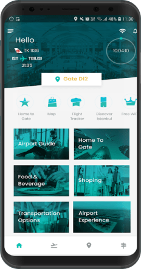
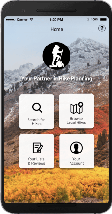

Case studies
-
Case study #1 Learn MoreGo Time!
Complete development of airport trip planning app (with real time info), minimizing your time in the airport, but allowing the time needed from your door to your flight’s gate.
-
Case study #2 Learn MoreStep 1
Start to finish conceptualization and development of hike planning app.
Design is intelligence made visible?
To me, not simply , it’s intelligence used with thoughtfulness and consideration. Good design draws you in and evokes feelings as it communicates and enables. Without factoring in human nature, it’s easily flawed.

User Experience Design
We’ve all seen bad user experience design, and plenty of it. From prescription labels too small to read, to confusing icons. Improper alignment and disrespect for the grid. We are drowing in arrows in our everyday life, and face an overwhelming bombardment by signage.
UX Design is an experience we all share. We’ve all wondered “Why does it have to be this way?” It doesn’t, good designers just need to step up. Since UX Design is a field that draws from many specialties, there is no one right path to the door. Analyst, research, journalism, graphic design, ideation and conceptualization, they all have a place on this bus! Could it be possible that business acumen pairs with fine art? Comic seriousness? Why not.
Good design is driven by need.
Who I Am
- I am a designer who seeks the balance between functionality and creativity
- I’m an ideation machine
- I’m someone who values white space (the quiet places in design)
- Nevertheless, I’m also someone who appreciates some bombastic flair
- I’m someone who appreciates that *everyone* has something to teach, and can be learned from (we all have room for growth)
- I am someone who wants to know why
- I’m a strong team player as I see UX Design as a team experience: designers, users, front-end coders, stakeholders and executives
- I’m a proud and grateful father, appreciative of the fact that I’ve learned more as a dad then just about any other experience!